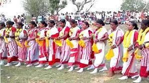

History of Jharkhand
Jharkhand, state of India, located in the northeastern part of the country. Jharkhand is bordered by the states of Bihar to the north, West Bengal to the east, Odisha to the south, Chhattisgarh to the west, and Uttar Pradesh to the northwest. Its capital is Ranchi.
Jharkhand, one of India’s newest states, was carved out of the southern portion of Bihar in 2000. Statehood was the culmination of a long struggle carried on primarily by the Adivasis, or Scheduled Tribes (an official term applied primarily to indigenous communities that fall outside the predominant Indian caste hierarchy).
Indian independence brought relatively little socioeconomic benefit to the people of the Jharkhand area, which led to widespread discontent with the Bihar administration, particularly among the tribal peoples.
Mrs. Hemant Soren
Chief Minister Of Jharkhand
CULTURES
Many of the villages of the various tribal peoples share some common characteristics. Most settlements have a community dance floor that springs to life during festive times. Among the most widely recognized of Jharkhand’s dances is chhau, an elaborate masked dance of the southeastern region, particularly the Saraikela and East Singhbhum districts.

Although once a village tradition associated with Chaitra Parva, a festival held every April in honour of the god Shiva, chhau eventually received royal patronage and then state sponsorship; it has since become a virtual emblem of the region.
Other tribal celebrations that provide occasions for music and dancing include the festival of flowers known as Sarhul (or Baha), a cattle festival called Sohrai, and a postharvest festival called Mage Parab.

Bhuddist Monastry
Ancient Bhuddist Monastry Found in Jharkhand India
FAMOUS PLACES:
Ranchi

Jamshedpur

Deoghar

Hazaribagh

Dhanbad

Bokaro

Giridih

FESTIVLAS
The festivities and celebrations in Jharkhand serve as a spiritual canvas showcasing soul stirring enjoyment. The combination of antiquity and plenty make the state astonishing when it comes to its festivals and celebrations.
- Karma
This festival is also known as the religious festival of and is celebrated with immense enthusiasm among the tribal inhabitants of Jharkhand. Devotees observe fast for the entire day, cultural performances take place around a branch of Sal tree which is kept in the middle of the ground.
- Sohrai
Associated with the cattle, this festival is celebrated during Diwali, i.e. in the month of November. The cattle are washed and worshipped during this festival. It is a festival of great fun and excitement.
- Sarhul
This is one of the primary celebrations of the tribal population of Jharkhand. The name of this festival means Worship of the Sal Tree. It is primarily the worship of nature, where local people also worship Goddess Sita as their Dhartimata.
- Holi
Holi is also one of the most important festivals of Jharkhand. The spring festival is enjoyed in Dhanbad in the Hindu month of Phalgun, which comes around February or March.
- Diwali
Diwali is another prominent festival in Jharkhand. In fact the celebrations start two days before the actual Diwali.
- Ram navami
Ramanavami is a religious festival that is celebrated with great pomp and show. Fasts and prayers are observed by the people and a highly colourful ceremony is enjoyed.